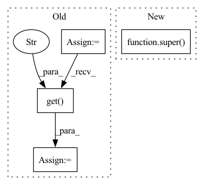

Pattern ID :7969

Before Change
def reset(self, config):
self.config = config
flink_config = config.get(RUNTIME_CONFIG_KEY, {}).get("flink", {})
self.scaling_config = flink_config.get("scaling", {})
self.auto_scaling = self.scaling_config.get("auto_scaling", False)
// Update the scaling parameters
self.scaling_mode = self.scaling_config.get("scaling_mode", FLINK_SCALING_MODE_APPS_PENDING)
self.scaling_step = self.scaling_config.get("scaling_step", FLINK_SCALING_STEP_DEFAULT)
self.scaling_resource = self.scaling_config.get("scaling_resource", FLINK_SCALING_RESOURCE_MEMORY)
self.apps_pending_threshold = self.scaling_config.get(
"apps_pending_threshold", APP_PENDING_THRESHOLD_DEFAULT)
self.apps_pending_free_cores_threshold = self.scaling_config.get(
After Change
return "scaling-with-flink"
def reset(self, config):
super().reset(config)
self._reset_flink_config()
def _reset_flink_config(self):
In pattern: SUPERPATTERN
Frequency: 4
Non-data size: 4
Instances
Fragment ID: 28402483
Project Name: oap-project/cloudtik
Commit Name: e2e083e00e6571bccdc9edc94fb797addf119b93
Time: 2023-03-24
Author: haifeng.chen@intel.com
File Name: python/cloudtik/runtime/flink/scaling_policy.py
M Class Name: FlinkScalingPolicy
N Class Name: FlinkScalingPolicy
M Method Name: reset(2)
N Method Name: reset(2)
M Parent Class: ScalingPolicy
N Parent Class: ScalingPolicy
M File Name: python/cloudtik/runtime/flink/scaling_policy.py
N File Name: python/cloudtik/runtime/flink/scaling_policy.py
M Start Line: 72
M End Line: 88
N Start Line: 72
N End Line: 73
'>
Before Change
def reset(self, config):
self.config = config
spark_config = config.get(RUNTIME_CONFIG_KEY, {}).get("spark", {})
self.scaling_config = spark_config.get("scaling", {})
// Update the scaling parameters
self.scaling_mode = self.scaling_config.get("scaling_mode", SPARK_SCALING_MODE_NONE)
self.scaling_step = self.scaling_config.get("scaling_step", SPARK_SCALING_STEP_DEFAULT)
self.scaling_resource = self.scaling_config.get("scaling_resource", SPARK_SCALING_RESOURCE_MEMORY)
self.apps_pending_threshold = self.scaling_config.get(
"apps_pending_threshold", APP_PENDING_THRESHOLD_DEFAULT)
self.apps_pending_free_cores_threshold = self.scaling_config.get(
"apps_pending_free_cores_threshold", APP_PENDING_FREE_CORES_THRESHOLD_DEFAULT)
After Change
return "scaling-with-spark"
def reset(self, config):
super().reset(config)
self._reset_spark_config()
def _reset_spark_config(self):
'>
Fragment ID: 28402229
Project Name: oap-project/cloudtik
Commit Name: e2e083e00e6571bccdc9edc94fb797addf119b93
Time: 2023-03-24
Author: haifeng.chen@intel.com
File Name: python/cloudtik/runtime/spark/scaling_policy.py
M Class Name: SparkScalingPolicy
N Class Name: SparkScalingPolicy
M Method Name: reset(2)
N Method Name: reset(2)
M Parent Class: ScalingPolicy
N Parent Class: ScalingPolicy
M File Name: python/cloudtik/runtime/spark/scaling_policy.py
N File Name: python/cloudtik/runtime/spark/scaling_policy.py
M Start Line: 72
M End Line: 87
N Start Line: 72
N End Line: 73
'>
Before Change
class Toronto3DSplit():
def __init__(self, dataset, split="training"):
self.cfg = dataset.cfg
path_list = dataset.get_split_list(split)
log.info("Found {} pointclouds for {}".format(len(path_list), split))
self.path_list = path_list
self.split = split
self.dataset = dataset
self.UTM_OFFSET = [627285, 4841948, 0]
self.cache_in_memory = self.cfg.get("cache_in_memory", False)
if self.cache_in_memory:
self.data_list = [None] * len(self.path_list)
def __len__(self):
After Change
class Toronto3DSplit(BaseDatasetSplit):
def __init__(self, dataset, split="training"):
super().__init__(dataset, split=split)
log.info("Found {} pointclouds for {}".format(len(self.path_list),
split))
'>
Fragment ID: 28402299
Project Name: isl-org/open3d-ml
Commit Name: 8abb32e53389f4fe268f68df0941447e062440f2
Time: 2020-11-12
Author: 49262224+YilingQiao@users.noreply.github.com
File Name: ml3d/datasets/toronto3d.py
M Class Name: Toronto3DSplit
N Class Name: Toronto3DSplit
M Method Name: __init__(3)
N Method Name: __init__(3)
M Parent Class: BaseDatasetSplit
N Parent Class:
M File Name: ml3d/datasets/toronto3d.py
N File Name: ml3d/datasets/toronto3d.py
M Start Line: 145
M End Line: 159
N Start Line: 145
N End Line: 147